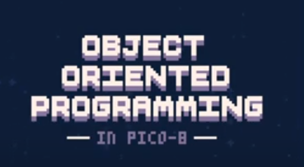

OOP in PICO-8
Star field example

Object Oriented Programming in PICO-8 video by Kevin Makes Games
They also made a github repo for the video example.
The lua progamming language is actually pretty similar to javascript. I could follow along pretty easily. I think i could apply this class inheritance structure to my js projects!
Tables
Tables in lua seem to be similar to objects in js
Quote from sdegutis in HackerNews:
"Lua tables are semantically almost identical to JavaScript objects. The one key difference is that any object can be a key in a Lua table, whereas all JS object keys are coerced into strings. The other more minor difference is that you use getmetatable() and setmetatable() instead of modifying or setting object.proto"
_ENV
"..._𝘦𝘯𝘷 itself is just a local identifier in your current scope, and like any other identifier you can assign anything to it. In particular, you can overwrite the automatically created _𝘦𝘯𝘷 in your current scope, which will always be the GLOBAL ENVIRONMENT, and point it to any table, and from that point on, any free name will be looked for inside that table and not in the _𝘦𝘯𝘷 scope originally received ."
It's interesting how you can change the current "global" environment.
"self" in lua seems to be the similar to "this" in js
putting _ENV as a parameter in a table function will make the current table act as the global environment throughout the function's execution. You don't need to add self. in front of variable names, saving tokens.
update=function(self)
self.y+=self.spd
if self.y-self.rad > 127 then
self.y=-self.rad
end
end
turns into...
update=function(_ENV)
y+=spd
if y-rad > 127 then
y=-rad
end
end
When the function finishes executing, the global environment will return to normal.
Metatables and metamethods
i like the word metatmethod
Metatables are sort of like prototypes. You can use it to make constructor methods.
"Any table can be the metatable of any other table; a group of related tables may share a common metatable (which describes their common behavior); a table can be its own metatable (so that it describes its own individual behavior). Any configuration is valid."
Every value in Lua can have a metatable.
"A metatable controls how an object behaves in arithmetic operations, bitwise operations, order comparisons, concatenation, length operation, calls, and indexing. A metatable also can define a function to be called when a userdata or a table is garbage collected (§2.5)."
Metatables are normal tables, but has keys that represent metamethods. You can assign a function to each key to decide what happens when it is executed. Like for __tostring, you can decide what the string representation of a table is. Or for __add, you can decide what happens when two things are added.
Using setmetatable, you can overwrite these default methods. This is called operator overloading. You can't really do that in Javascript.
When you set _ENV in a function, it becomes the "global scope" throughout it's execution. This means it wont be able to access any global variables outside of it.
__index
"__index allows you to define a function or table to be used when looking up a key that doesn't exist in another table"
This can be used to create prototypal inheritance
star = {
x = 64,
y = -1,
spd = 1,
rad = 1,
clr = 7
}
star2 = {
x = 32,
}
setmetatable(star2, {
__index = star
))
In the example above, star2 has all the same properties as star except for the x value.
To create a constructor function,
star = {
x = 64,
y = -1,
spd = 1,
rad = 1,
clr = 7
new = function(self, tbl)
tbl = tbl or {} //protect against nil value
setmetatable(tbl, {
__index = self
})
return tbl
end
//our new tbl has a metatable with an index of "star"
star2 = star:new({
x = 32
})
//in js it would be star.new, here it's star:new
JS equivalent of __index is proxy() ? (need to read up a bit more)
snippet from the stackoverflow answer -
--Lua code
local o = setmetatable({},{__index=function(self,key)
print("tried to undefined key",key)
return nil
end
//With Proxy in Javascript
let o = new Proxy({}, {
get: function (target, key, receiver) {
if (!target.hasOwnProperty(key)){
console.log("tried to undefined key "+key);
}
return Reflect.get(target, key, receiver);
},
set: function (target, key, value, receiver) {
console.log(`set `+ key);
return Reflect.set(target, key, value, receiver);
}
})
get : __index
set : __newindex